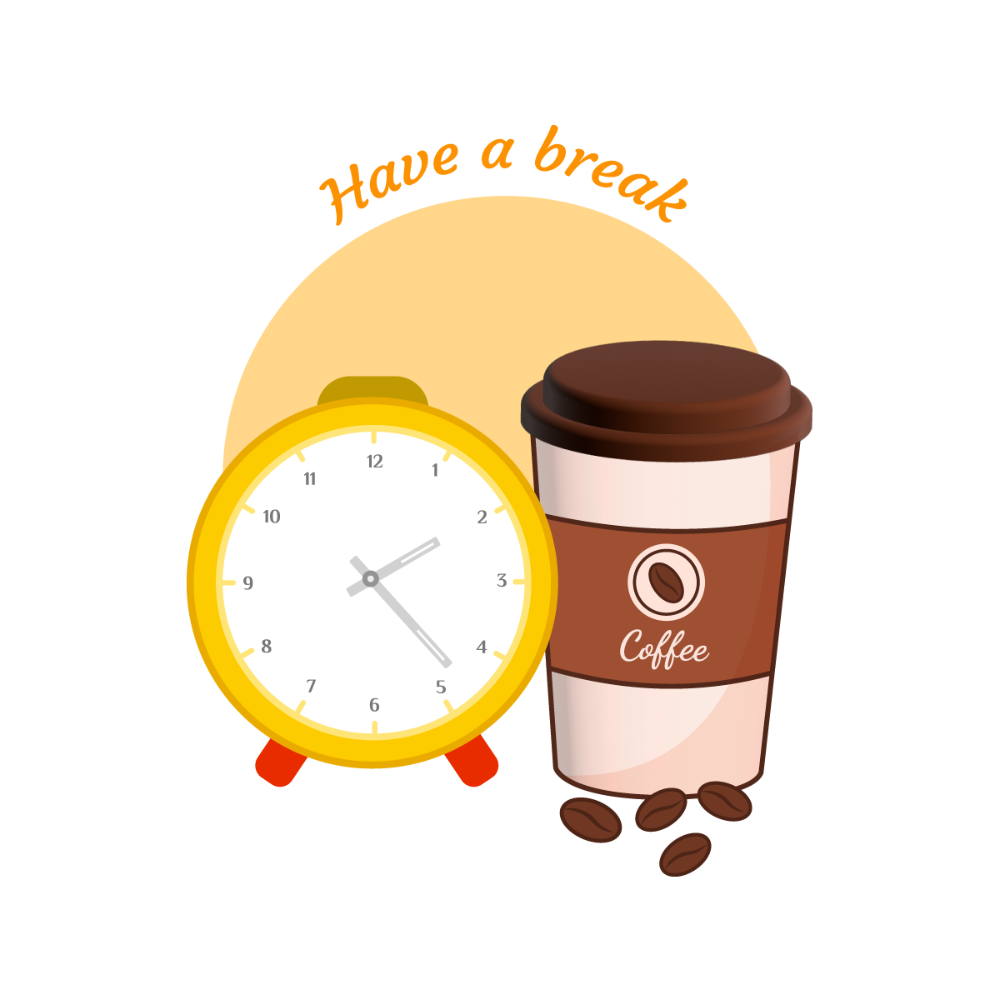

個人簡介和申請動機
我是童詩穎，今年29歲，畢業於國立台北大學社會學系，雙主修中文系，擁有6年的工作經驗。
目前，我在會統企業擔任業務一職，我司專營通路銷售、代理各類食品、用品供應至全聯銷售，我主要的工作內容為，
在我們的供應商與全聯之間扮演溝通、協商的角色，維繫良好的顧客關係，並努力達成業績目標。除此之外，
我在日常工作中也經常會使用到全聯的後台系統，常常會覺得某些地方的設計不夠流暢，或是哪邊的資訊串接不夠完善直觀等等，
這便讓我產生想要修正他的想法，後來我才進一步了解到這是網頁開發的領域。
為了更深入了解網頁開發領域，我便陸續報名了多們程式語言課程，像是HTML、CSS、JavaScript、React、GitHub
等等，但在課程結束之後，雖然我能夠大致了解各種語法的邏輯跟概念，但是要將這些邏輯和概念成功的轉換成一份完整的網頁，
我覺得我還有很大的進步空間，正當我在思考下一步該怎麼走的時候，我偶然得知了WeHelp
Bootcamp 的徵才活動，
透過YouTube看到每屆學員的成果發表之後，也讓我萌生想成為跟他們一樣的人的想法，因此就決定報名第六屆的訓練營。
我認為我有以下幾點個人特質，很適合來應徵 WeHelp Bootcamp：
1.
我有很好的自制力：即使我目前是全職工作者，我仍然能安排時間學習，從10月的每個平日晚間、假日全天，我都有安排程式語法的學習課程，
也陸續將於今年年底結業，因此在學習時間上我並不會比其他參賽者弱勢。
2.
我已經具備基礎的程式語言能力：從10月到12月的這段時間，我已經掌握了基本的html、css、JavaScript程式語法，並具備足夠的網頁建構相關知識，
因此能夠較其他參賽者更快進入學習狀態。
3.
我有良好的英文能力：我考過多益880分的成績。良好的英文能力，無論是在撰寫程式語法，或是面對debug時，都是必需的技能，因此在學習程式語言的這條道路上，
良好的英文能力，無疑是一大助力。
綜合上述3點個人特質，我相信我能夠為 WeHelp Bootcamp
這個活動帶來正向的收益。
也希望貴單位能給我這個機會進入 WeHelp
Bootcamp 努力學習，成功成為一名優秀的前端工程師。
曾經做過哪些軟體工程技術相關的學習？若有作品請分享給我們
o 台大資訊系統訓練班-JavaScript(ES6)網頁前端工程入門：to-do-list
o 台大資訊系統訓練班-JavaScript與React網頁前端工程實務：幽浮射擊遊戲
o JavaScript前端開發(假日班)(泰山)第01期：打地鼠遊戲
o 銘傳大學-網頁工程師養成-前端程式技術班第01期：9*9乘法表
o CSS切版練習：彭彭的課程教學
如果參與這個訓練，會怎麼安排學習時間
o 周一~周五：18:00~23:00 (5*5=25hr)
o 周末：8:00~23:00 (15*2=30hr)
o 其他零星時間 (例如用餐、午休、通勤、上廁所…)： (5~10hr) , Total：60~65hr
o 每週一早上的線上會議，我可以透過打字的方式參加；每周五的實體討論課程，可請假參加。
o 從10月開始的平日晚間、週末都有安排程式語言的課程，學習成效不一定能保證，但是在 ”自律學習方面” 我是可以肯定有成效的。
軟體技術日新月異，如何確定選擇投入的領域是正確有回報的?
其實在現代社會中，無論是什麼產業都必須因應快速變化的商業模式，即使今天不是科技產業，
求職者也必須時常更新自己的技能來因應職務的需求，那對於科技領域來說，其實也只是相較其他產業更常變動技術內容、更常需要求職者精進自己而已，
因此我會把"科技業時常需要精進自己"這件事，視為一種產業優勢，因為你遲早都必須學會"快速學習新事物"的能力，你何不透過"投入科技產業的訓練"
來提升自己快速學習新知的技能。
又或者換個方式來說，任何人在做出抉擇時，都無法保證自己的選擇一定是正確的，但是對於我自己來說，可以確定一件事一定是不正確的，那就是”選擇不投入這個領域"，
假如我今天因為害怕科技業的快速變動，而選擇裹足不前，那我日後一定會很後悔當年的自己沒勇氣跨出這一步。所以我今天選擇來報名
wehelp bootcamp，
即使我最後沒有如願成為一名工程師，但至少可以很放心地對自己說，"我已經嘗試過了"，也算對得起自己了！
請描述一件產生明顯負面情緒的經歷，如何處理該情緒?
曾經發生過，因為自己的工作經歷太淺，而錯失可以接待大客戶的機會，起初當然會很不甘心，覺得自己也許沒有別人認為的那麼差，也會覺得資源分配不公平，
為什麼好的機會都在少數人手中，也許可以把機會讓給其他人試試看，別人也不見得會表現得比較差。但在後來看到資深業務與客戶合作的情形後，
就覺得"哇~果然薑還是老的辣，資深業務的交際手腕跟溝通談吐果然不是蓋的!
"，讓我不由得欽佩起來，情緒從一開始的氣餒、不甘心，逐漸轉為崇拜跟羨慕，
覺得這樣的人好厲害，自己也想成為像他一樣的人，到後來也把前輩當作楷模來模仿、學習，來彌補自己經驗上的不足。
因此，我認為當產生負面情緒的時候，首先必須先理解情緒，理解情緒從何而來、為何而來，這樣才有辦法消化情緒，也許當我們在工作中遇到負面情緒的時候，
可能沒辦法馬上消化，但我們可以先想辦法短暫的遺忘他，像是透過：聽音樂、吃甜食、或是寫下心情抒發，等情緒冷靜後，再來處理工作上的問題，等工作完成後，
才回過頭來解情緒的問題，這時候就可以透過運動、冥想、按摩放鬆來排解壓力，又或者可能到這個時候，自己也沒當初那麼生氣或難過了。
關於這份申請網頁，分享一個開發時的技術心得
在撰寫這份CSS時，我回想起上課所學的內容，比如：A+B應該等於C，但實際寫出來卻變成了A+B=D，這讓我非常困惑，為什麼結果會和課堂上教的完全不一樣？
當下完全想不透問題出在哪，只好依賴AI逐條檢查語法，每個細小的問題都反覆檢查3-4次，每次都耗費大半天的時間，才終於找到問題所在。
而大部分根本的原因都出在於：CSS的型別差異跟繼承性，例如：block、inline。每一個樣式設定背後都牽扯到其他樣式規範，這些規範相互影響且錯綜複雜，
因此要真正掌握好CSS，並不光只是記住語法而已，而是需要透過不斷實作、練習才有辦法去理解它背後的涵義。
而在練習撰寫了幾次CSS後，我歸納出以下幾個步驟：
1. 先將所有標籤的預設樣式清除，讓樣式從零開始，避免受到瀏覽器默認值的干擾。
2. 將邊框border設置為可見，方便在debug時檢查各元素的範圍與位置。
3. 基於CSS的繼承特性，從最外層逐層撰寫樣式，直至最內層。
4. 遵循RWD（響應式網頁設計）的原則，從最小裝置開始撰寫樣式，然後逐步延伸到較大的裝置，確保網頁在不同屏幕下都能良好呈現。
5. 當基礎架構完成後，開始進行細部樣式的微調，例如：圖片大小、超連結樣式、列表格式、文字大小與粗細、段落間距與換行等。
6. 最後，撰寫進階功能，如CSS動畫、RWD 的細節調整，特別是常見的置中問題，這些細節通常需要多次嘗試才能達到理想效果。
在這個過程中，我體會到CSS雖然看似簡單，但它實際上可以應用的面向卻非常廣泛且靈活。這份靈活性讓人能夠自由設計出各種美觀的網頁，但同時也帶來了不少挑戰。
例如，稍有不慎的一個設定可能會引發其他區塊的樣式錯亂，這對全局掌控與細節處理的能力都是一種考驗。經過多次反覆練習，我逐漸感受到，CSS 的學習，
不僅是技術層面的進步，還鍛鍊了我的邏輯思維與問題解決能力。每次解決一個問題，我都會有一種成就感，並對這門技術有更深的理解。
此外，CSS還讓我學會如何在美觀與實用性之間取得平衡，這種審美與技術結合的過程，讓人著迷又充滿挑戰。
未來，我希望能進一步學習更多CSS的進階技巧，如變數應用、函數的靈活使用，以及更複雜的動畫效果。
同時，持續精進自己在RWD設計上的能力，讓網頁能更好地適應各種裝置的需求。
如何看待自身工作和整個社會群體的連結關係
我目前的工作是業務，與社會群體的連結在於：了解消費者需求，及時將這些需求反饋給產品部門，並為顧客篩選、推薦合適的產品進行銷售。
而工程師與社會群體的連結則是：根據消費者的需求設計出符合市場需求的商品，並提供給業務進行銷售。因此，我認為業務與工程師的工作是相輔相成的，
兩者對於整體社會來說都有著密不可分的影響，缺一不可。工程師需要業務的市場洞察能力，來找到最適合社會大眾的產品方向；同時也需要業務的銷售能力，將精心設計的產品推廣到各大通路，最終交到消費者手中。
而業務則依賴工程師的專業技術來製作優質產品，並進一步將產品的特性轉化為消費者能夠理解的語言，從而提高銷售量。
而目前在我的業務工作中，也經常遇到一些挑戰。例如，客戶對產品需求表達不清，或者現有產品的設計不足以完全滿足市場需求。每當遇到這種情況，我總會想：
如果我能具備工程師的技能，就能親自設計出更符合客戶需求的產品，進而提升銷售表現。這也是我想轉職的原因之一，我希望通過學習程式語言，掌握工程師的技能，
最終成為一名能夠從需求到產品實現的全能型人才，為社會帶來更多價值。我相信，結合過去作為業務的經驗，以及未來作為工程師的專業技術，我能夠更好地實現自己的職業理想。
從上次提出申請至今，多做了哪些努力？( 第一次申請不用回答 )

其他想要對我們說的事情
很感謝貴單位提供一個相對市場上來說價格更優惠、內容更充實的訓練營，給我們這些想轉職的工作者一個選擇。非常感謝😊